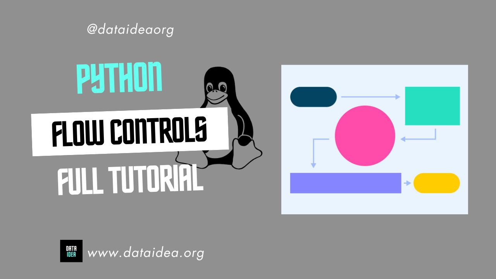

Python control flow tools change the flow of how code is executed by the Python interpreter.
Since the Python interpreter executes code in a line-by-line manner, Python control flow tools help dictate what line(s) of code should run in a Python program. There are different types of control flow tools available to us in Python and we will go through them in detail in this lesson.
Functions
A function in python is a group statements that perform a particular task
# This function calculates Body Mass Index
def calculateBodyMassIndex(weight_kg, height_m):
body_mass_index = weight_kg / pow(height_m, 2)
rounded_bmi = round(body_mass_index, 2)
return rounded_bmi# lets try
calculateBodyMassIndex(67, 1.6)26.17Creating a function
To create a function, we need the following:
- The
defkeyword - A function name
- Round brackets
()and a colon: - A function body- a group of statements
def greeter():
message = 'Hello'
print(message)- To execute a function, it needs to be called
- To call a function, use its function name with parentheses
()
greeter()HelloFunction Parameters/Arguments
- When calling a function, we can pass data using parameters/arguments
- A parameter is a variable declared in the function. In the example below,
number1andnumber2are parameter - The argument is the value passed to the function when its called. In the example below
3and27are the arguments
# define the function
def addNumbers(number1, number2):
sum = number1 + number2
print(sum)
# Call the function
addNumbers(3, 27)30# setting a default argument
def greet(name='you'):
message = 'Hello ' + name
print(message)
greet('Tinye')
greet()Hello Tinye
Hello youDefault Arguments:
A function can have default arguments.
It can be done using the assignment operator (=).
If you don’t pass the argument, the default argument will be used instead.
def hello(name = 'Agaba'):
print('Hello ' + name)
hello('John') # calling with John
hello() # calling with no nameHello John
Hello AgabaReturn Statement
The return statement is used to return a value to a function caller
def addNumbers(number1, number2):
sum = number1 + number2
return sum
summation = addNumbers(56, 4)
print(summation)60Important!
The return statement stops the execution of a function.
lambda functions
Lambda functions (also called anonymous functions) are functions that donot have names
The body of a lambda function can only have one expression, but can have multiple arguments
The result of the expression is automatically returned
Syntax:
lambda parameters: expression
# Example of lambda function
calculateBMI = lambda weight_kg, height_m: round((weight_kg/(height_m ** 2)), 2)
# Calling a labda function
calculateBMI(67, 1.7)23.18Note!
In the example above, the body mass index is automatically return, even without using the return statement
Practice functions
Calculate CGPA
# Assume 4 course units
# 1. Math - A
# 2. Science - B
# 3. SST - B
# 4. English - C
def calculate_CGPA(GPs_list, CUs_list):
length = len(GPs_list)
product_sum = 0
for item in range(length):
product_sum += GPs_list[item] * CUs_list[item]
CUs_sum = sum(CUs_list)
CGPA = product_sum / CUs_sum
return CGPA
# calculate_CGPA(4, 5)Get someones age given birth month and year
def getAge(month, year):
month_diff = 12 - month
year_diff = 2023 - year
return str(year_diff) + ' years ' + str(month_diff) + ' months'
age = getAge(year=2000, month=10) # keyword argument
age2 = getAge(10, 2000) # positional argument
print(age)23 years 2 monthsBefore we continue, we have a humble request, to be among the first to hear about future updates of the course materials, simply enter your email below, follow us on (formally Twitter), or subscribe to our YouTube channel.
Loops
- Loops are used to repetitively execute a group of statements
- we have 2 types,
forandwhileloop
For Loop
A for loop is used to loop through or iterate over a sequence or iterable objects
Syntax:
for variable in sequence:
statementsLooping through a list
The for loop is commonly used with lists.
pets = ['cat', 'dog', 'rabbit']
# iterate through pets
for pet in pets:
print(pet)cat
dog
rabbitHere’s another example to convert many weights from kilograms(kgs) to pounds(pds)
# convert all weights in list from kg to pounds
weights_kg = [145, 100, 76, 80]
weights_pds = []
for weight in weights_kg:
pounds = weight * 2.2
rounded_pds = round(pounds, 2)
weights_pds.append(rounded_pds)
print(weights_pds)This example displays all letters in my name.
# Display all letters in a name
name = 'Shafara'
for letter in name:
print(letter)S
h
a
f
a
r
aWhile loop
- The
whileloop executes a given group of statements as long as the given expression isTrue
Syntax:
while expression:
statementscounter = 0
while counter < 5:
print('Hello you')
counter += 1Hello you
Hello you
Hello you
Hello you
Hello you# Convert the weights in the list from kgs to pounds
weights_kg = [145, 100, 76, 80]
weights_pds = []
counter = 0
end = len(weights_kg)
while counter < end:
pound = weights_kg[counter] * 2.2
rounded_pds = round(pound, 3)
weights_pds.append(rounded_pds)
counter += 1
print(weights_pds)[319.0, 220.0, 167.2, 176.0]Conditional Statements
Conditional statements in Python are fundamental building blocks for controlling the flow of a program based on certain conditions. They enable the execution of specific blocks of code when certain conditions are met. The primary conditional statements in Python include if, elif, and else.
Basic Syntax
If Statement
The if statement is used to test a condition. If the condition evaluates to True, the block of code inside the if statement is executed.
if condition:
# block of codeExample:
x = 10
if x > 5:
print("x is greater than 5")Else Statement
The else statement is used to execute a block of code if the condition in the if statement evaluates to False.
if condition:
# block of code if condition is True
else:
# block of code if condition is FalseExample:
x = 3
if x > 5:
print("x is greater than 5")
else:
print("x is not greater than 5")Elif Statement
The elif (short for else if) statement allows you to check multiple conditions. If the first condition is False, it checks the next elif condition, and so on. If all conditions are False, the else block is executed.
if condition1:
# block of code if condition1 is True
elif condition2:
# block of code if condition2 is True
else:
# block of code if none of the above conditions are TrueExample:
x = 7
if x > 10:
print("x is greater than 10")
elif x > 5:
print("x is greater than 5 but less than or equal to 10")
else:
print("x is 5 or less")Nested Conditional Statements
Conditional statements can be nested within each other to handle more complex decision-making processes.
Example:
x = 15
if x > 10:
if x > 20:
print("x is greater than 20")
else:
print("x is greater than 10 but not greater than 20")
else:
print("x is 10 or less")Conditional Expressions (Ternary Operator)
Python also supports conditional expressions, which allow for a more concise way to write simple if-else statements.
variable = value_if_true if condition else value_if_falseExample:
x = 10
result = "greater than 5" if x > 5 else "5 or less"
print(result) # Output: greater than 5Combining Conditions
Multiple conditions can be combined using logical operators (and, or, not).
Example:
x = 8
if x > 5 and x < 10:
print("x is between 5 and 10")Practical Usage
Conditional statements are used in a wide variety of scenarios, such as:
- Validating user input.
- Controlling the flow of loops.
- Implementing different behaviors in functions or methods.
- Handling exceptions or special cases in data processing.
Understanding and effectively using conditional statements are crucial for writing efficient and readable code in Python. They enable developers to build programs that can make decisions and respond dynamically to different inputs and situations.